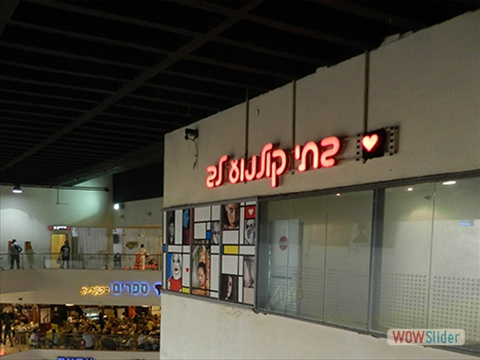
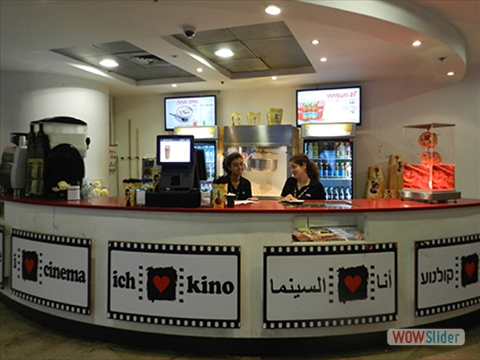

כללי
בימים החמים של הקיץ, הבילוי המומלץ
ביותר הוא הליכה לחופי הים השונים
שמציעה העיר תל אביב כדי להצטנן
במימי הים התיכון. החופים הקרובים
הנמצאים במרחק הליכה הינם חוף
פרישמן מדרום ועד חוף מציצים בצפון,
במרכזם של חופים אלו שוכנות בריכת גורדון
והמרינה בתל אביב. מלבד הטבילה במים,
אוהבי הספורט הימי יכולים להשכיר
ציוד לפי שעה או לקחת שיעורים
בגלישה ימית כמו קייקים, גלשני גלים,
גלשני רוח, ו-SUP. בנוסף, בחוף גורדון
ומציצים ישנם מתחמי כדור- עף ללא תשלום.
מקום
החוף (:

כללי
בית הקולנוע הראשון של רשת בתי הקולנוע
לב שהוקם ב1981. קולנוע זה מתמחה בהקרנת
סרטים זרים תרבותיים ואיכותיים אשר לרוב אינם
"סרטי הוליווד", מקימי הקולנוע שמו לעצמם כמטרה
להביא תכנים מקוריים ולא שיגרתים.
מקום
דיזינגוף סנטר בניין A קומה 3.
- 
- 

כללי
דיזינגוף סנטר - קניון דיזינגוף סנטר הוקם בשנת 1977 ונקרא על שמו של מאיר דיזינגוף, ראש העיר הראשון של העיר תל אביב. הפרויקט ההנדסי נחשב כאחד הפרויקטים הגדולים והמורכבים בישראל באותה התקופה ומטרת האדריכלים הייתה לאפשר למבקרים במרכז הקניות הרגשה של "עיר בתוך עיר", אשר בפועל גורם למבקרים רבים תחושת חוסר התמצאות במרחב. בקניון ישנן כ-400 בתי עסק, כולל חנויות של מותגי אופנה, מוצרים אלקטרוניים, מסעדות ועוד סוגים רבים ומגוונים של חנויות.
מקום
דיזנגוף 50


כללי
כחלק מטרנד משחקי הבילוש שעשה את דרכו לארץ בשנה האחרונה, out of the box מציעים משחק בריחה המעודד עבודת צוות וחשיבה מחוץ לקופסא לקבוצות של 2-5 אנשים, במסגרתו הקבוצה נכנסת לחדר מלא בחידות ורמזים במטרה לפתור אותם ולצאת מהחדר תוך 60 דקות. מקור הרעיון ממשחקי הקווסט היפנים. המשחק מהווה חוויה משעשעת ומגבשת לזוגות, משפחה, חברים ועמיתים לעבודה. המשחק אינו מפחיד או דורש מיומנויות מיוחדות.
מקום
דיזינגוף 203